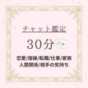
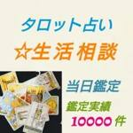

日ごとの動き
「売れた」は、出品中だった商品が売り切れに変わるのを見届けた数です。買う人が先に決まっている「◯◯様専用」と追加・延長は、別の列に分けました。「売り切れを新たに見つけた」は初めて見た時点ですでに売れていた商品で、何日も前に売れた分も入ります。9月6日と7日はこの列が大きく出ています。7日の未明に1ページあたりの読み込みを20件から100件に増やしたため、前から売れていた商品をまとめて見つけたからです。
| 日付 | 出品された | 売れた(見届けた) | 見失った後に売れていた | 新たに見つけた(うち最近の分) | 売れた数の目安 | 専用・追加の売り切れ | 新たに見つけた(全部) | 観測回数 |
|---|---|---|---|---|---|---|---|---|
| 2026-09-06 | 553 | 1 | 3 | 2 | 6 | 0 | 218 | 4 |
| 2026-09-07 | 758 | 130 | 20 | 93 | 243 | 12 | 439 | 19 |
| 2026-09-08 | 582 | 112 | 9 | 28 | 149 | 12 | 57 | 22 |
| 2026-09-09 | 727 | 133 | 16 | 27 | 176 | 20 | 46 | 23 |
| 2026-09-10 | 813 | 110 | 13 | 25 | 148 | 14 | 40 | 22 |
| 2026-09-11 | 821 | 115 | 13 | 23 | 151 | 8 | 42 | 23 |
| 2026-09-12 | 790 | 138 | 15 | 36 | 189 | 15 | 48 | 21 |
| 2026-09-13 | 783 | 148 | 9 | 33 | 190 | 11 | 44 | 18 |
| 2026-09-14 | 791 | 133 | 9 | 45 | 187 | 4 | 56 | 18 |
| 2026-09-15 | 862 | 141 | 10 | 37 | 188 | 12 | 52 | 17 |
| 2026-09-16 | 855 | 131 | 6 | 34 | 171 | 11 | 46 | 18 |
| 2026-09-17 | 837 | 124 | 7 | 34 | 165 | 10 | 57 | 16 |
| 2026-09-18 | 707 | 123 | 6 | 32 | 161 | 10 | 45 | 16 |
| 2026-09-19 | 795 | 115 | 7 | 27 | 149 | 8 | 44 | 15 |
| 2026-09-20 | 674 | 97 | 6 | 29 | 132 | 4 | 44 | 16 |
| 2026-09-21 | 766 | 131 | 8 | 23 | 162 | 10 | 34 | 19 |
| 2026-09-22 | 747 | 140 | 9 | 30 | 179 | 7 | 39 | 17 |
| 2026-09-23 | 762 | 110 | 6 | 34 | 150 | 11 | 39 | 16 |
| 2026-09-24 | 796 | 120 | 10 | 32 | 162 | 4 | 40 | 16 |
| 2026-09-25 | 837 | 144 | 4 | 32 | 180 | 12 | 53 | 17 |
| 2026-09-26 | 743 | 106 | 5 | 28 | 139 | 17 | 39 | 14 |
| 2026-09-27 | 833 | 139 | 6 | 36 | 181 | 9 | 54 | 13 |
| 2026-09-28 | 782 | 129 | 6 | 30 | 165 | 12 | 50 | 14 |
| 2026-09-29 | 813 | 125 | 4 | 26 | 155 | 10 | 40 | 15 |
| 2026-09-30 | 869 | 101 | 7 | 27 | 135 | 10 | 47 | 13 |
| 2026-10-01 | 908 | 154 | 4 | 44 | 202 | 16 | 60 | 15 |
| 2026-10-02 | 762 | 109 | 7 | 29 | 145 | 11 | 42 | 14 |
| 2026-10-03 | 745 | 108 | 1 | 21 | 130 | 6 | 39 | 12 |
| 2026-10-04 | 745 | 134 | 6 | 65 | 205 | 11 | 92 | 8 |
| 2026-10-05 | 850 | 119 | 1 | 48 | 168 | 13 | 71 | 14 |
| 2026-10-06 | 741 | 88 | 4 | 53 | 145 | 7 | 70 | 11 |
| 2026-10-07 | 814 | 123 | 3 | 40 | 166 | 11 | 57 | 13 |
| 2026-10-08 | 816 | 105 | 1 | 44 | 150 | 18 | 60 | 14 |
| 2026-10-09 | 697 | 40 | 4 | 10 | 54 | 2 | 12 | 8 |
| 2026-10-10 | 693 | 132 | 0 | 74 | 206 | 9 | 102 | 9 |
| 2026-10-11 | 754 | 120 | 3 | 53 | 176 | 9 | 71 | 9 |
| 2026-10-12 | 702 | 96 | 5 | 32 | 133 | 9 | 46 | 11 |
| 2026-10-13 | 857 | 104 | 3 | 37 | 144 | 9 | 58 | 12 |
| 2026-10-14 | 853 | 113 | 4 | 56 | 173 | 12 | 79 | 7 |
| 2026-10-15 | 762 | 92 | 1 | 32 | 125 | 10 | 40 | 11 |
| 2026-10-16 | 306 | 46 | 9 | 12 | 67 | 2 | 17 | 7 |
| 2026-10-20 | 453 | 37 | 0 | 221 | 258 | 0 | 354 | 1 |
| 2026-10-21 | 717 | 115 | 1 | 131 | 247 | 8 | 165 | 6 |
| 2026-10-22 | 742 | 111 | 0 | 39 | 150 | 8 | 50 | 10 |
| 2026-10-23 | 709 | 86 | 3 | 37 | 126 | 9 | 49 | 11 |
| 2026-10-24 | 569 | 98 | 0 | 22 | 120 | 6 | 31 | 10 |
| 2026-10-25 | 635 | 99 | 1 | 35 | 135 | 6 | 52 | 11 |
| 2026-10-26 | 683 | 77 | 0 | 39 | 116 | 6 | 55 | 10 |
| 2026-10-27 | 710 | 123 | 1 | 39 | 163 | 9 | 51 | 10 |
| 2026-10-28 | 686 | 85 | 0 | 30 | 115 | 14 | 39 | 9 |
| 2026-10-29 | 631 | 98 | 1 | 33 | 132 | 4 | 44 | 9 |
| 2026-10-30 | 542 | 89 | 0 | 44 | 133 | 2 | 64 | 9 |
| 2026-10-31 | 532 | 82 | 0 | 26 | 108 | 5 | 42 | 8 |
| 2026-11-01 | 625 | 88 | 2 | 28 | 118 | 9 | 42 | 9 |
| 2026-11-02 | 600 | 101 | 0 | 30 | 131 | 4 | 54 | 9 |
| 2026-11-03 | 651 | 109 | 0 | 42 | 151 | 8 | 57 | 9 |
| 2026-11-04 | 528 | 87 | 0 | 45 | 132 | 8 | 59 | 6 |
| 2026-11-05 | 580 | 80 | 1 | 28 | 109 | 9 | 39 | 8 |
| 2026-11-06 | 571 | 81 | 0 | 50 | 131 | 2 | 66 | 3 |
| 2026-11-07 | 550 | 69 | 0 | 46 | 115 | 8 | 60 | 8 |
| 2026-11-08 | 464 | 64 | 0 | 42 | 106 | 10 | 59 | 7 |
| 2026-11-09 | 577 | 114 | 0 | 43 | 157 | 9 | 66 | 17 |
| 2026-11-10 | 527 | 70 | 0 | 31 | 101 | 6 | 47 | 15 |
| 2026-11-11 | 524 | 91 | 0 | 27 | 118 | 9 | 39 | 16 |
| 2026-11-12 | 532 | 85 | 0 | 35 | 120 | 9 | 53 | 14 |
| 2026-11-13 | 302 | 32 | 0 | 9 | 41 | 5 | 10 | 13 |
見出しをクリックすると並べ替えできます。
「売れた数の目安」は、見届けた分と、見失った後に売れていた分と、新たに見つけた売り切れのうち、観測を始めた後に更新されて3日以内に売れた分を足した数です。見失った出品はこれまでに1192件を開いて確かめました。売れていたのは70件、消されていたのは906件、まだ出品中だったのは216件です。
観測を始めた日と今日は途中までの数なので、丸1日ぶんではありません。見届けられるのは観測している範囲の商品だけなので、メルカリ全体で売れた数より少なく出ます。
曜日ごとの動き
丸1日ぶん観測できた日だけを数えています。同じ曜日が複数回あるときは1日あたりの平均にしています。観測を続けるほど、給料日前後や週末の差が見えてきます。
| 曜日 | 観測できた日数 | 1日あたりの出品 | 1日あたりの売り切れ | 売り切れ÷出品 |
|---|---|---|---|---|
| 月 | 6 | 754 | 190 | 0.25 |
| 火 | 6 | 731 | 174 | 0.24 |
| 水 | 6 | 758 | 172 | 0.23 |
| 木 | 6 | 784 | 180 | 0.23 |
| 金 | 5 | 686 | 152 | 0.22 |
| 土 | 4 | 768 | 171 | 0.22 |
| 日 | 3 | 763 | 183 | 0.24 |
見出しをクリックすると並べ替えできます。
いま出すならこれ
観測した数字から、売れている形をそのまま条件に落としました。数字が動けばここも変わります。
狙うジャンル
電話相談系
入口商品の売り切れ3869件に対して出品9101件で、出回っている数に対していちばん買われています。次点はタロット系です。
つける価格
500〜999円
電話相談系の入口商品では、この帯が売り切れ1076件に対して出品1814件です。中央値は1,222円になります。
商品名に入れる語
15分、チャット、30分、霊感、1件
売り切れ側での出現率が、出品側より高い語です。悩みの語と即時性の語を組み合わせます。
出し直す時刻
14時、15時、21時
売れた時刻が分かった1320件のうち、この時間帯に集まっています。その1時間前に出し直します。
買った人に次に出すもの
2,133円の追加・延長
入口888円で買った人に、延長・追加・10分という単位で追加を出します。観測できたのは232件とまだ少ない数です。
商品説明の書き方
チャットで送る、多め(6〜19)、ご了承くださいと書く
売り切れ側に多く出てくる書き方です。納品のしかたは「チャットで送る」が+15ポイント。 説明の絵文字の数は「多め(6〜19)」が+7ポイント。 注意書きは「ご了承くださいと書く」が+4ポイント。
サムネイルの作り方
暖色なし、平坦、青
売り切れ側に多く出てくる見た目です。赤や金の面積は「暖色なし」が+8ポイント。 明暗の差は「平坦」が+8ポイント。 主な色は「青」が+7ポイント。 明るさは「明るい」が+7ポイント。
差別化できるところ
出回っている数のわりに売れているところを探しています。直近7日間に出品された入口商品と、出品中から売り切れに変わるのを見届けた入口商品で数えています。「◯◯様専用」と追加・延長は入れていません。毎日の結果を残して、前の日と比べた入れ替わりも出します。
ジャンル×価格帯
全体の売れた÷出品は0.15です。この1.3倍以上で、出品数が少なめのところだけを並べています。
| ジャンル×価格帯 | 売れた(見届けた) | 出品された | 売れた÷出品 |
|---|---|---|---|
| タロット系×2,000〜4,999円 | 7 | 20 | 0.35 |
| ヒーリング系×1,000〜1,999円 | 4 | 19 | 0.21 |
見出しをクリックすると並べ替えできます。
11月12日と比べて入れ替わりはありません。
売れているのに、まだ使っている人が少ない語
出品側で使っている人が15%以下の語だけです。倍率が高いほど、売れた商品に偏って入っています。
| 商品名に入れる語 | 売れた商品に入っていた数 | 売れた側の出現率(%) | 出品側の出現率(%) | 倍率 |
|---|---|---|---|---|
| 健康 | 26 | 5 | 2 | 2.05 |
| 30分 | 91 | 16 | 8 | 1.94 |
| 霊感 | 27 | 5 | 2 | 1.71 |
| チャット | 107 | 19 | 11 | 1.65 |
| 15分 | 41 | 7 | 4 | 1.65 |
| 電話 | 86 | 15 | 10 | 1.47 |
| 3名 | 8 | 1 | 1 | 1.42 |
| 実績 | 8 | 1 | 1 | 1.42 |
| 1件 | 19 | 3 | 2 | 1.39 |
| 質問 | 49 | 9 | 6 | 1.38 |
見出しをクリックすると並べ替えできます。
11月12日と比べて入れ替わりはありません。
売れている出品者の手口
追いかけている出品者の売れ方と、商品説明と一緒に集めた配送の欄から、売れている人がどう売っているかを数字で並べました。
入口を赤字に近い値段にして、あとで取り返す
最初の1回は手数料10%と送料を引くと手元にほとんど残らない値段で売ります。気に入ってくれた人に、取引メッセージで延長や追加を提案して専用ページを作り、そこで利益を出します。
追いかけている出品者のうち、入口の値段が500円以下の人は92人です。そのうち60人が、売上金額の3割以上を専用ページや延長で得ています。
| 出品者 | 入口の中央値(円) | アップセルの中央値(円) | アップセル比(本数%) | アップセル比(金額%) | 売り切れ(件) |
|---|---|---|---|---|---|
| Masala(マサーラー) | 400 | 1300 | 18 | 39 | 556 |
| 肝っ玉母ちゃん霊視鑑定 | 結瞳-ゆいめ | 333 | 6980 | 37 | 92 | 442 |
| あおい｜霊視鑑定 | 300 | 4800 | 18 | 80 | 238 |
| 蒼真ー魂継霊視鑑定ー | 444 | 5000 | 23 | 90 | 153 |
| 神村つむぎ｜縁脈霊視 | 333 | 10000 | 20 | 86 | 147 |
| haru＊＊ | 500 | 1200 | 19 | 39 | 138 |
| いずみ⭐︎｜チャネリングタロットと天然石 | 300 | 2980 | 15 | 57 | 110 |
| ミコト | 最高峰神韻霊術士 | 333 | 3000 | 25 | 88 | 103 |
| TUBASA☆彡心理×霊視鑑定師 | 333 | 6980 | 19 | 80 | 100 |
| 焔華｜10年越しの宿縁を契る天鈿女命霊術 | 333 | 4444 | 9 | 57 | 94 |
| 占いちゃん | 390 | 580 | 37 | 78 | 86 |
| 在席中:シラユリ占い｜運命を好転へ導く | 400 | 650 | 35 | 47 | 84 |
見出しをクリックすると並べ替えできます。
発送方法の選び方
占いの鑑定は取引メッセージで中身を届けるので、送るものは手紙1通か何もない形がほとんどです。送料の高い匿名配送を選ぶと、そのぶん入口の手取りが減ります。
「未定」は、売れた後に出品者が送り方を決める設定です。売れた後にゆうゆうメルカリ便へ切り替えれば、ゆうパケットポストminiでも送れます。「未定」の出品の商品説明を読むと、ゆうパケットポストminiと書いてあるのは4%です。ミニレターと書いてあるのは7%、匿名で送ると書いてあるのは18%です。
商品説明を読んだ入口商品のうち、売れた6,074件と販売中の1,195件で割合を比べています。差がプラスの方法ほど、売れた側に多く使われています。
| 発送方法 | 売れた側(%) | 販売中側(%) | 差 |
|---|---|---|---|
| ゆうゆうメルカリ便 | 31 | 51 | -20 |
| 郵便（定形・定形外など） | 32 | 21 | +11 |
| 未定 | 32 | 11 | +21 |
| らくらくメルカリ便 | 5 | 16 | -11 |
| その他 | 0 | 0 | +0 |
| クロネコヤマト | 0 | 0 | +0 |
見出しをクリックすると並べ替えできます。
発送までの日数
日数の選び方は、売れた側と販売中の側で大きな差がありません。
| 発送までの日数 | 売れた側(%) | 販売中側(%) | 差 |
|---|---|---|---|
| 4~7日で発送 | 36 | 33 | +3 |
| 1~2日で発送 | 33 | 29 | +4 |
| 2~3日で発送 | 31 | 38 | -7 |
見出しをクリックすると並べ替えできます。
まとめて出して、一覧の上に居続ける
新しい順の一覧では、出したばかりの商品が上に並びます。同じ商品を何本かまとめて出し、数時間おきに出し直すことで、一覧の上に自分の商品が並ぶ時間を長くしています。
1時間以内に続けて出した本数の中央値が3本以上の出品者です。
| 出品者 | 1回に出す本数 | 出す回の間隔(時間) | 1日に出す本数 | 売り切れ(件) |
|---|---|---|---|---|
| モナ 少しずつ出品再開します❗️ | 3 | 3 | 22.5 | 723 |
| 肝っ玉母ちゃん霊視鑑定 | 結瞳-ゆいめ | 4 | 3 | 24.1 | 442 |
| 蒼真ー魂継霊視鑑定ー | 4 | 15.6 | 8.8 | 153 |
| 待機中 霊視鑑定 あす香 | 3 | 7.3 | 7 | 148 |
| 龍とミライ★メルカり占い総合指名１位 | 3 | 4.9 | 10.9 | 115 |
| おはな@即購入OK/24H以内発送 | 10 | 12.2 | 19.9 | 109 |
| 紫龍杏❤︎秘伝の縁結び祈祷師 | 3 | 8.1 | 7.2 | 105 |
| 焔華｜10年越しの宿縁を契る天鈿女命霊術 | 6 | 6.8 | 14.8 | 94 |
| 星レイナ｜紹介制鑑定師による高次元霊視 | 4 | 14.4 | 6.2 | 93 |
| 投資家医者繁栄りんかい先生一店舗目 | 3 | 11 | 9.3 | 87 |
見出しをクリックすると並べ替えできます。
便利ツール出し直しはフリマアシストを使うと楽です
押すと開きます
数時間おきに出し直す手口は、手でやると商品を1つずつ開いて操作するので時間がかかります。Chromeの拡張機能フリマアシストを入れると、メルカリのWeb版の商品ページからワンクリックで再出品できます。停止・再開・編集・削除・値下げ値上げも、同じ画面からできます。
- メルカリのWeb版に、商品の出品日時と更新日時が表示されます。出し直した時刻を確かめられます。
- インストールしたあとに、シークレットコードの入力が要ります。配布ページの案内に従ってください。
- メルカリ公式ではなく別の会社のツールです。使う前に、配布ページの説明とメルカリの規約を確かめてください。
題名の付け方とサムネイルの作り方は、「差別化できるところ」と「サムネイルの見た目」の章に数字があります。
いちばん売れている商品
同じ商品名を出し直して売る形が多いため、商品名をまとめて売り切れの回数で並べました。回数が多いほど繰り返し売れています。
見出しをクリックすると並べ替えできます。
出品者の欄は、追跡している出品者の商品と、商品ページを開いて確かめた分だけ埋まります。空欄は調べていない商品です。
よく売れている商品のサムネイル 48枚
売れた回数の多い順です。文字の量や色の使い方を見比べてください。サムネイルを押すとメルカリの商品ページが開きます。「◯◯様専用」と追加・延長は外しています。買う人が先に決まっているので、見た目で売れたわけではないためです。
（チャット15分間占い放題）タロット占い
本格霊視タロット 15分間占い放題 チャット鑑定 お
深い占い 霊視 鑑定 占い
タロット 恋愛占い ご質問1件 鑑定書付き発送
【即対応/チャット鑑定】チャネリング/悩み相談/占い
占い放題40分
占い 30分間通話鑑定 鑑定書あり 有形商品
⭐️電話占いorチャット30分♡霊感タロット占い放題
占い 15分間チャット鑑定 鑑定書あり 有形商品

【15分】チャット鑑定⭐︎タロット占い放題
タロット占い 鑑定 恋愛 結婚 仕事 金運 不倫 復
特別価格3333→3222⭐️電話占いorチャット6
【初回限定お試し価格】辛口・霊視鑑定 お試し300円
YES NO占い ５問 リーディング鑑定
【自己紹介価格】霊視鑑定 お試し300円｜元・東京対

タロット占い❇️生活相談 当日鑑定
占い鑑定 この先どうなる？ 未来 先行き 不安 流れ
電話占い 四柱推命 タロット占い 20分 555円
【全て視えます】深堀鑑定 恋愛 仕事 お金 人間関係
霊感タロット占い お悩み１つ
チャット占い鑑定15分
相手の気持ち✧霊感タロット電話占い30分✧恋愛/仕事
【今すぐ鑑定】恋愛・仕事| 深掘りタロット占い150
【1時間以内鑑定】霊感タロット占い♡ご質問3つ
タロット占い｜質問3つ｜24時間以内鑑定｜恋愛・仕事
【質問5つ/即鑑定】はい いいえ占い
【深層鑑定】深い占い 霊視 鑑定 引き寄せ 悩み 復
電話鑑定 タロット占い 30分
今すぐ お電話占い タロット占い 30分
幸せを呼ぶ心のクリーニング 10分 リーディング鑑
【霊視タロット】YES/NO占い｜ご質問最大6件まで
タロット 恋愛占い yes/noご質問1件 鑑定書付
【霊視鑑定】仕事/恋愛/人間関係/人生/金運/家庭/
電話占い 占い放題 鑑定 お悩み相談 タロットカード
本格鑑定 タロット占い 質問1つ
本格霊視タロット｜30分間占い放題 恋愛相談 チャッ
霊視鑑定・恋愛・人間関係・仕事・人生・金運・家庭・未
【霊視鑑定】恋愛・複雑恋愛・不倫・金運・家族・子供・
霊視鑑定！復縁•片想い•複雑恋愛•溺愛されるヒーリン
タロット占い❇️仕事 当日鑑定
オルゴナイト・ペンデュラムで占います☆二者択一☆YE
【即日鑑定】深読みタロット占い すぐ鑑定
今だけ初回500円｜当たる手相鑑定＋四柱推命｜恋愛
タロットカード、ルノルマンカード占い
電話占い30分 恋愛/お仕事/夫婦/人間関係 様々な
電話占い 電話鑑定 占い放題30分2000円
【霊視鑑定】占い・恋愛・複雑恋愛・不倫・金運・縁切り
タロット占い 電話鑑定 60分
売れている出品者
売り切れを観測した件数で並べました。1時間以内に続けて出した分は、まとめて出した1回として数えています。
| 売り切れ(件) | 金額の合計(円) | 出品者 | 主なジャンル | 1回に出す本数 | 出す回の間隔(時間) | 1日に出す本数 | アップセル比(本数%) | 同(金額%) | 入口の中央値(円) |
|---|---|---|---|---|---|---|---|---|---|
| 319 | 648500 | agag本日満員御礼 明日16:30- | 電話相談系 | 2 | 4.8 | 7.7 | 4% | 8% | 2500 |
| 303 | 114193 | 肝っ玉母ちゃん霊視鑑定 | 結瞳-ゆいめ | 霊視系 | 4 | 3 | 24.1 | 37% | 92% | 333 |
| 224 | 197286 | あー "handmade nail" | タロット系 | 1 | 4.3 | 10.6 | 0% | 0% | 855 |
| 222 | 153402 | さくらこ 待機中 今すぐ鑑定可能！ | 電話相談系 | 1 | 4.5 | 5.2 | 8% | 13% | 690 |
| 219 | 291156 | 離席中 魂に寄り添う霊感鑑定士 リリィ | 電話相談系 | 1 | 5 | 4.2 | 3% | 8% | 1222 |
| 217 | 435368 | seiko❤️healing離席中 | 電話相談系 | 1 | 3.5 | 6 | 6% | 6% | 1888 |
| 193 | 160851 | 月鏡ノア | 霊視系 | 1 | 6.6 | 5.6 | 48% | 51% | 777 |
| 189 | 162205 | Masala(マサーラー) | 電話相談系 | 2 | 5.2 | 9 | 18% | 39% | 400 |
| 185 | 200161 | みやび丨しあわせな占い師 | その他鑑定 | 2 | 6.3 | 5.1 | 29% | 56% | 1111 |
| 180 | 279840 | 占い・相談 秀美☪️終わります | 電話相談系 | 2 | 2.6 | 6.2 | 30% | 35% | 1210 |
| 160 | 144780 | 寧々｜カードリーディング | タロット系 | 1 | 7.2 | 3.5 | 26% | 27% | 888 |
| 155 | 46500 | saney ☆占い☆鑑定 | 霊視系 | 1 | 9.3 | 3.4 | 0% | 0% | 300 |
| 140 | 186920 | あおい｜霊視鑑定 | 霊視系 | 2 | 10.6 | 3.6 | 18% | 80% | 300 |
| 136 | 192456 | Mi☆1111霊視鑑定師 | 電話相談系 | 1 | 6.2 | 3.9 | 12% | 13% | 1111 |
| 122 | 262589 | 【鑑定中】愛｜占い｜鑑定 | 電話相談系 | 1 | 9.7 | 3.4 | 4% | 15% | 2099 |
| 115 | 60110 | minato（湊） | 霊視系 | 1 | 6.6 | 4 | 17% | 20% | 333 |
| 108 | 139336 | sakura❁⃘*.゜ | 電話相談系 | 1 | 11.3 | 3.1 | 21% | 19% | 999 |
| 105 | 244301 | ☆順☆の部屋 | 電話相談系 | 1 | 11.8 | 2.4 | 85% | 84% | 2222 |
| 102 | 48185 | 蒼真ー魂継霊視鑑定ー | 霊視系 | 4 | 15.6 | 8.8 | 23% | 90% | 444 |
| 98 | 97902 | JUJU | 電話相談系 | 1 | 11.1 | 2.4 | 1% | 1% | 999 |
| 98 | 89426 | 鑑定視tomo | 電話相談系 | — | — | — | — | — | — |
| 96 | 141764 | 待機中 霊視鑑定 あす香 | 霊視系 | 3 | 7.3 | 7 | 0% | 0% | 666 |
| 86 | 75686 | ⭐︎ぱちぱち⭐︎ | 電話相談系 | 2 | 24 | 3.4 | 9% | 11% | 699 |
| 84 | 302105 | スピリチュアル タロット すず | タロット系 | 2 | 6.6 | 4.9 | 0% | 0% | 2500 |
| 82 | 121740 | 占い師♡はる♡鑑定中❌ | 電話相談系 | 1 | 19.4 | 2.1 | 24% | 34% | 1180 |
| 81 | 103092 | ayu | 電話相談系 | 1 | 17.1 | 3 | 12% | 11% | 1111 |
| 76 | 79659 | 紫龍杏❤︎秘伝の縁結び祈祷師 | 霊視系 | 3 | 8.1 | 7.2 | 31% | 88% | 555 |
| 73 | 59250 | ひかり | 電話相談系 | 1 | 19.9 | 1.5 | 99% | 99% | 999 |
| 72 | 49644 | 星レイナ｜紹介制鑑定師による高次元霊視 | 霊視系 | 4 | 14.4 | 6.2 | 5% | 28% | 444 |
| 72 | 143189 | ここな | 電話相談系 | 1 | 19 | 2 | 45% | 48% | 1888 |
| 69 | 93175 | もこ⁂(占い) | 電話相談系 | 1 | 18.9 | 2.3 | 8% | 6% | 1100 |
| 69 | 157530 | 鑑定再開7color☆ stardust | 電話相談系 | 1 | 13.7 | 2.3 | 15% | 17% | 1990 |
| 68 | 28977 | 焔華｜10年越しの宿縁を契る天鈿女命霊術 | 霊視系 | 6 | 6.8 | 14.8 | 9% | 57% | 333 |
| 66 | 66998 | 月編みのひとしずく | タロット系 | 1 | 11.9 | 2.6 | 8% | 4% | 1100 |
| 65 | 55478 | 占い 井上 さわ | 電話相談系 | 1 | 20.5 | 1.6 | 0% | 0% | 555 |
| 64 | 118904 | 神村つむぎ｜縁脈霊視 | 霊視系 | 1 | 9.8 | 2.3 | 20% | 86% | 333 |
| 62 | 101929 | 忍野 詠子（おしの うたこ） | 電話相談系 | 1 | 18.1 | 2.9 | 36% | 46% | 888 |
| 62 | 20646 | TUBASA☆彡心理×霊視鑑定師 | 霊視系 | 1 | 6.8 | 4.1 | 19% | 80% | 333 |
| 62 | 33608 | ♡Lillyjuju♡ | 霊視系 | 1 | 8.4 | 3.5 | 20% | 19% | 450 |
| 62 | 77650 | 霊視鑑定｜月乃みなみ | 電話相談系 | 1 | 21.6 | 2.3 | 25% | 34% | 1400 |
| 60 | 25866 | 清臣（きよおみ）｜宿縁を紐解く神職霊視師 | 霊視系 | 1 | 6.3 | 2.8 | 0% | 0% | 444 |
| 60 | 21380 | 本日限定セール中❤️霊感タロット占い師 | 霊視系 | 1 | 8.7 | 3.2 | 0% | 0% | 300 |
| 60 | 67200 | つるむらさき | その他鑑定 | 1 | 17.4 | 2.8 | 43% | 48% | 1000 |
| 57 | 18730 | このはなさくや＊霊視タロット鑑定師 | 霊視系 | 1.5 | 15.8 | 3.5 | 9% | 57% | 300 |
| 57 | 146468 | ☆電話占い師 AYA | 電話相談系 | 2 | 10.1 | 4.4 | 24% | 32% | 1999 |
| 56 | 160948 | 龍とミライ★メルカり占い総合指名１位 | 電話相談系 | 3 | 4.9 | 10.9 | 0% | 0% | 3500 |
| 55 | 27927 | 月乃 -tsukino- タロット鑑定師 | タロット系 | 3 | 12.5 | 4.3 | 0% | 0% | 500 |
| 55 | 40963 | ミロク | 神仏霊視 運命の歪みを正す者 | 霊視系 | 1 | 9.6 | 2.6 | 14% | 84% | 333 |
| 55 | 20202 | ミコト | 最高峰神韻霊術士 | 霊視系 | 1 | 10.8 | 2.6 | 25% | 88% | 333 |
| 55 | 88000 | 〜Rua〜 7日 終日待機中 | 電話相談系 | 1 | 21.4 | 1.8 | 16% | 16% | 1500 |
| 54 | 94800 | マミマミ | 電話相談系 | 1 | 13.3 | 2.6 | 20% | 28% | 2000 |
| 53 | 28150 | ノルン｜霊視鑑定師 | 霊視系 | 9 | 13.7 | 11.1 | 8% | 46% | 300 |
| 53 | 48740 | ☆maru☆タロット占い | 電話相談系 | 1 | 15.9 | 1.8 | 33% | 41% | 980 |
| 52 | 48155 | 御影＠霊視鑑定 | 霊視系 | 1 | 14.2 | 2.3 | 29% | 43% | 888 |
| 51 | 142287 | EMA ☾* 現役占い師 本格霊視鑑定✎ | 電話相談系 | 1 | 25.9 | 2.5 | 56% | 83% | 999 |
| 51 | 88378 | あーさん | その他鑑定 | 1 | 19.6 | 1.7 | 64% | 75% | 999 |
| 51 | 41739 | 癒月(ゆずき) ※待機中※ | 電話相談系 | 1 | 18.5 | 1.9 | 1% | 5% | 777 |
| 51 | 37900 | はちみつ@エネルギーヒーラー | 霊視系 | 1 | 17.8 | 2.1 | 0% | 0% | 750 |
| 50 | 24020 | 占いちゃん | 霊視系 | 2 | 14.2 | 3.4 | 37% | 78% | 390 |
| 50 | 114384 | ノア | 電話相談系 | 1 | 10.6 | 3.4 | 36% | 37% | 2200 |
見出しをクリックすると並べ替えできます。
1時間以内に続けて出した分は、まとめて出した1回として数えています。「1回に出す本数」はその1回あたりの本数、「出す回の間隔」は前の回から次の回までの時間です。例えば5本まとめて出して翌日また出す出品者は、1回5本・間隔24時間になります。本数から右の6列は、継続して追跡している出品者にだけ入ります。
ジャンル別に見る
いまのところ電話相談系は出品数と売り切れ数がほぼ並んでいます。霊視系は出品が最も多いのに売り切れは半分以下で、供給が厚くなっています。
| ジャンル | 売り切れ | 出品 | 売り切れ÷出品 | 入口の最頻価格帯 | 入口の中央値 | アップセルの中央値 | 売れた商品名に多い語 |
|---|---|---|---|---|---|---|---|
| 電話相談系 | 4612 | 9101 | 0.43 | 1,000〜1,999 | 1222 | 2222 | チャット 30分 15分 恋愛 |
| 霊視系 | 3909 | 24869 | 0.15 | 〜499 | 444 | 2175 | 恋愛 仕事 復縁 金運 |
| タロット系 | 1547 | 6273 | 0.23 | 500〜999 | 777 | 888 | 恋愛 質問 仕事 鑑定書 |
| 命術系 | 196 | 1402 | 0.13 | 500〜999 | 980 | 1200 | 四柱推命 仕事 恋愛 金運 |
| ヒーリング系 | 263 | 1696 | 0.13 | 1,000〜1,999 | 1222 | 3850 | ヒーリング 限定 縁結び 復縁 |
| その他鑑定 | 1180 | 3025 | 0.19 | 1,000〜1,999 | 1100 | 2500 | 質問 恋愛 仕事 人間関係 |
見出しをクリックすると並べ替えできます。
入口商品は誰でも買える公開の出品です。アップセルは「◯◯様専用」「追加」「延長」など、すでに買った人に向けた出品です。この2つは買い手も値段の決まり方も違うため、混ぜた平均は使っていません。
いくらの商品が売れているか
入口商品だけを価格帯ごとに並べました。赤が青に迫っている帯ほど、出回っている数に対してよく買われています。ジャンルごとに主戦場の価格がはっきり違います。
売り切れの中身を4つに分ける
売り切れ 11,707 件の内訳です。誰でも買える公開の出品が 9,397 件、お試しと銘打ったものが 607 件、「◯◯様専用」のように誰か1人のために切ったページが 1,471 件、追加や延長として売られたものが 232 件でした。
この4つは買い手も値段の決まり方も違うため、混ぜた平均は使っていません。公開の出品は市場の競争で値段が決まります。専用ページと追加は、すでに話している相手との間で値段が決まります。
| 区分 | 売り切れ | 価格の中央値 | 最頻価格帯 | 最高 |
|---|---|---|---|---|
| 入口商品(公開・通常) | 9397 | 888 | 〜499 | 240000 |
| 入口商品(お試し) | 607 | 650 | 1,000〜1,999 | 12800 |
| 指名の専用出品 | 1471 | 2180 | 2,000〜4,999 | 800000 |
| 追加・延長 | 232 | 2133 | 2,000〜4,999 | 15900 |
見出しをクリックすると並べ替えできます。
専用ページの単価が入口より高いとは限りません。入口と専用の両方が観測できた出品者はまだ4人で、専用が入口の0.9倍から5.8倍までばらついています。専用ページは値上げのためだけでなく、指名された相手のための取り置きとしても使われます。
はっきり追加として売られた 232 件は、中央値 2,133 円です。単位は延長・追加・10分・30分が多く、鑑定の時間を延ばす形が中心になります。
出品は昼と夜に山があります
観測した出品の更新時刻を時間帯ごとに数えました。正午前後にまとめて出して、夜にもう一度補充する動きが読み取れます。
売れた時刻そのものは商品ページに表示されません。販売中の商品が次の観測で売り切れに変わったときだけ、前後30分の精度で分かります。
何時に売れているか
販売中の商品が次の観測で売り切れに変わった 1320 件だけを数えています。観測の間隔が空いた商品と、初めて見た時点ですでに売れていた商品は入れていません。観測は24時間続けています。続けるほどこの図は埋まります。
母数は 1320 件とまだ少ないため、傾向として読んでください。ほかに、観測が空いて時刻が分からないものが 10071 件、初めて見た時点ですでに売れていたものが 4276 件あります。
売れた商品名に入っている語
入口商品のタイトルを語に分けて、売り切れ側と出品側で出現率を比べました。倍率が高い語ほど、その語を含む商品に売れた実績が偏っています。アップセルは除いています。
| 語 | 売り切れ | 出品 | 売り切れ側の出現率(%) | 出品側の出現率(%) | 倍率 |
|---|---|---|---|---|---|
| 霊視 | 4607 | 26578 | 46 | 57 | 0.81 |
| タロット | 3667 | 13764 | 37 | 30 | 1.23 |
| 恋愛 | 3098 | 17608 | 31 | 38 | 0.82 |
| 仕事 | 2302 | 11855 | 23 | 26 | 0.9 |
| チャット | 2116 | 4756 | 21 | 10 | 1.97 |
| 電話 | 1713 | 5154 | 17 | 11 | 1.5 |
| 復縁 | 1406 | 10724 | 14 | 23 | 0.62 |
| 30分 | 1384 | 3391 | 14 | 7 | 1.78 |
| 人間関係 | 1295 | 7250 | 13 | 16 | 0.84 |
| 金運 | 1156 | 7632 | 12 | 16 | 0.72 |
| 鑑定書 | 1069 | 3760 | 11 | 8 | 1.28 |
| 15分 | 985 | 1776 | 10 | 4 | 2.25 |
| 質問 | 980 | 3050 | 10 | 7 | 1.42 |
| 不倫 | 980 | 8565 | 10 | 18 | 0.55 |
| 霊感 | 822 | 1934 | 8 | 4 | 1.78 |
| 未来 | 750 | 5299 | 7 | 11 | 0.68 |
| 縁結び | 699 | 5931 | 7 | 13 | 0.58 |
| 限定 | 698 | 4093 | 7 | 9 | 0.81 |
| 子 | 525 | 3268 | 5 | 7 | 0.78 |
| 20分 | 524 | 1353 | 5 | 3 | 1.59 |
| 気持ち | 515 | 3622 | 5 | 8 | 0.7 |
| 開運 | 460 | 3990 | 5 | 9 | 0.58 |
| 片思い | 419 | 3422 | 4 | 7 | 0.62 |
| 結婚 | 412 | 4598 | 4 | 10 | 0.47 |
| 本音 | 396 | 4068 | 4 | 9 | 0.51 |
| 縁切り | 375 | 3458 | 4 | 7 | 0.56 |
| 辛口 | 353 | 1401 | 4 | 3 | 1.13 |
| 彼 | 343 | 3918 | 3 | 8 | 0.47 |
| 1件 | 342 | 777 | 3 | 2 | 1.65 |
| 24時間 | 334 | 1768 | 3 | 4 | 0.9 |
| 転職 | 332 | 2213 | 3 | 5 | 0.75 |
| ヒーリング | 288 | 1252 | 3 | 3 | 1.05 |
| 60分 | 287 | 897 | 3 | 2 | 1.32 |
| お試し | 276 | 906 | 3 | 2 | 1.27 |
| お金 | 266 | 1371 | 3 | 3 | 0.92 |
| 四柱推命 | 248 | 1207 | 2 | 3 | 0.97 |
| 波動 | 227 | 2009 | 2 | 4 | 0.61 |
| 初回 | 221 | 1464 | 2 | 3 | 0.77 |
| 10分 | 205 | 428 | 2 | 1 | 1.59 |
| 引き寄せ | 196 | 1565 | 2 | 3 | 0.68 |
| 健康 | 193 | 556 | 2 | 1 | 1.33 |
| 運勢 | 181 | 1250 | 2 | 3 | 0.76 |
| オラクル | 178 | 832 | 2 | 2 | 0.99 |
| 月 | 176 | 1076 | 2 | 2 | 0.83 |
| チャネリング | 168 | 617 | 2 | 1 | 1.15 |
| ツインレイ | 150 | 2146 | 1 | 5 | 0.44 |
| 即日 | 146 | 1252 | 1 | 3 | 0.66 |
| 守護霊 | 142 | 1097 | 1 | 2 | 0.72 |
| 天職 | 137 | 1060 | 1 | 2 | 0.72 |
| 40分 | 135 | 295 | 1 | 1 | 1.44 |
| 当日 | 110 | 388 | 1 | 1 | 1.14 |
| 夫 | 98 | 1079 | 1 | 2 | 0.59 |
| 実績 | 98 | 497 | 1 | 1 | 0.96 |
| 浄化 | 85 | 854 | 1 | 2 | 0.65 |
| 1時間 | 83 | 179 | 1 | 0 | 1.32 |
| 前世 | 78 | 826 | 1 | 2 | 0.64 |
| 1名 | 78 | 364 | 1 | 1 | 1.0 |
| 5分 | 76 | 202 | 1 | 0 | 1.23 |
| 2027年 | 61 | 193 | 1 | 0 | 1.14 |
| ２０分 | 60 | 60 | 1 | 0 | 1.42 |
| 願望 | 58 | 364 | 1 | 1 | 0.88 |
| リピ | 57 | 207 | 1 | 0 | 1.09 |
| 適職 | 56 | 688 | 1 | 1 | 0.63 |
| ５問 | 55 | 57 | 1 | 0 | 1.38 |
| 3件 | 54 | 211 | 1 | 0 | 1.06 |
| 6件 | 53 | 39 | 1 | 0 | 1.41 |
| 数秘 | 47 | 346 | 0 | 1 | 0.84 |
| 才能 | 47 | 573 | 0 | 1 | 0.66 |
| 700件 | 39 | 89 | 0 | 0 | 1.17 |
| 50分 | 38 | 101 | 0 | 0 | 1.13 |
| 2件 | 37 | 376 | 0 | 1 | 0.76 |
| 相性 | 37 | 611 | 0 | 1 | 0.59 |
| 3名 | 34 | 139 | 0 | 0 | 1.03 |
| ３０分 | 32 | 52 | 0 | 0 | 1.19 |
| 45分 | 30 | 152 | 0 | 0 | 0.98 |
| 2名 | 28 | 305 | 0 | 1 | 0.77 |
| 感謝 | 27 | 119 | 0 | 0 | 1.01 |
| 3時間 | 21 | 51 | 0 | 0 | 1.09 |
| 5問 | 21 | 35 | 0 | 0 | 1.12 |
| １０分 | 16 | 25 | 0 | 0 | 1.1 |
| 5件 | 16 | 98 | 0 | 0 | 0.96 |
| 3000文字 | 16 | 164 | 0 | 0 | 0.86 |
| ２名 | 14 | 19 | 0 | 0 | 1.1 |
| 2000文字 | 13 | 68 | 0 | 0 | 0.99 |
| 30年 | 9 | 74 | 0 | 0 | 0.94 |
| 5名 | 9 | 23 | 0 | 0 | 1.04 |
| 無制限 | 8 | 56 | 0 | 0 | 0.96 |
| AI | 8 | 52 | 0 | 0 | 0.97 |
| ４０分 | 8 | 26 | 0 | 0 | 1.02 |
| 元彼 | 7 | 124 | 0 | 0 | 0.84 |
| 1000文字 | 7 | 16 | 0 | 0 | 1.03 |
| 17分 | 7 | 54 | 0 | 0 | 0.96 |
| 25分 | 6 | 13 | 0 | 0 | 1.03 |
| 48時間 | 6 | 21 | 0 | 0 | 1.01 |
| 90分 | 6 | 23 | 0 | 0 | 1.01 |
| 2400件 | 6 | 14 | 0 | 0 | 1.03 |
| 2026年 | 6 | 33 | 0 | 0 | 0.99 |
| 3分 | 6 | 92 | 0 | 0 | 0.88 |
| １名 | 5 | 15 | 0 | 0 | 1.02 |
| 22分 | 5 | 47 | 0 | 0 | 0.95 |
| 3問 | 5 | 66 | 0 | 0 | 0.92 |
| 25年 | 5 | 12 | 0 | 0 | 1.02 |
| 70分 | 5 | 11 | 0 | 0 | 1.03 |
| 今月 | 5 | 25 | 0 | 0 | 1.0 |
| １件 | 5 | 54 | 0 | 0 | 0.94 |
| 10問 | 5 | 7 | 0 | 0 | 1.03 |
見出しをクリックすると並べ替えできます。
商品説明の中身
商品ページを開いて説明文を 7,269 件読み込みました。売り切れた商品と販売中の商品で、書き方の割合を比べています。差がプラスの行ほど、売れている側に多く出てくる書き方です。「◯◯様専用」と追加・延長は除いてあります。
説明の長さ
| 売り切れ | 販売中 | 差 | |
|---|---|---|---|
| 短い(200字未満) | 6% | 5% | +1 |
| ふつう(200〜499字) | 12% | 10% | +2 |
| 長い(500〜899字) | 40% | 36% | +4 |
| とても長い(900字〜) | 42% | 49% | -7 |
説明の絵文字の数
| 売り切れ | 販売中 | 差 | |
|---|---|---|---|
| 絵文字なし | 43% | 55% | -12 |
| 少なめ(1〜5) | 30% | 25% | +6 |
| 多め(6〜19) | 23% | 16% | +7 |
| びっしり(20〜) | 3% | 4% | -1 |
納品のしかた
| 売り切れ | 販売中 | 差 | |
|---|---|---|---|
| チャットで送る | 63% | 48% | +15 |
| 電話や通話でする | 29% | 17% | +12 |
| 郵送する | 28% | 21% | +7 |
| 鑑定書を付ける | 46% | 45% | +2 |
| 画像やPDFで送る | 0% | 1% | -0 |
納期の約束
| 売り切れ | 販売中 | 差 | |
|---|---|---|---|
| 1時間以内 | 4% | 1% | +3 |
| 即日・当日 | 2% | 1% | +1 |
| 数日以内 | 2% | 2% | -0 |
| 24時間以内 | 19% | 22% | -3 |
特典
| 売り切れ | 販売中 | 差 | |
|---|---|---|---|
| 追加の質問を受ける | 3% | 2% | +1 |
| 鑑定後のフォロー | 1% | 0% | +1 |
| リピーター割引 | 16% | 16% | +0 |
| おまけを付ける | 1% | 2% | -1 |
注意書き
| 売り切れ | 販売中 | 差 | |
|---|---|---|---|
| ご了承くださいと書く | 17% | 13% | +4 |
| 返金について書く | 11% | 7% | +4 |
| 医療や生死はお断り | 42% | 40% | +2 |
| 本人以外はお断り | 2% | 3% | -1 |
数字で約束していること
| 項目 | 書いていた売り切れ(件) | 売り切れ側の中央値 | 販売中側の中央値 | 売り切れ側の最大 |
|---|---|---|---|---|
| 受ける質問の数 | 1150 | 1 | 1 | 10 |
| 約束している文字数 | 612 | 2000 | 3000 | 6000 |
| 鑑定の分数 | 2221 | 15 | 20 | 90 |
| 説明の文字数 | 6074 | 835 | 893 | 1117 |
| 説明の行数 | 6074 | 50 | 50 | 118 |
| 説明の絵文字の数 | 6074 | 1 | 0 | 90 |
見出しをクリックすると並べ替えできます。
中央値は、その項目を書いていた商品だけで計算しています。書いていない商品は数に入れていません。
ジャンルに分けて見る
上の表はジャンルを混ぜた数字です。ジャンルが違えば売り方も違うため、同じ言葉が別の意味になります。例えば「24時間以内」は文章で納品するジャンルの言葉で、電話相談系ではほとんど使いません。ここではジャンルごとの差を並べています。数字は売り切れ側の割合から販売中側の割合を引いたものです。件数が足りないところは「—」にしてあります。
説明の長さ
| 全体 | 電話相談系（売2306/中194） | 霊視系（売2319/中589） | タロット系（売890/中184） | 命術系（売119/中53） | ヒーリング系（売116/中51） | その他鑑定（売324/中124） | |
|---|---|---|---|---|---|---|---|
| 短い(200字未満) | +1 | -0 | +0 | -0 | -3 | -4 | +8 |
| ふつう(200〜499字) | +2 | -3 | -0 | +4 | +9 | -4 | +13 |
| 長い(500〜899字) | +4 | +3 | +11 | -16 | +6 | -24 | -7 |
| とても長い(900字〜) | -7 | +1 | -10 | +12 | -12 | +32 | -13 |
見出しをクリックすると並べ替えできます。
説明の絵文字の数
| 全体 | 電話相談系（売2306/中194） | 霊視系（売2319/中589） | タロット系（売890/中184） | 命術系（売119/中53） | ヒーリング系（売116/中51） | その他鑑定（売324/中124） | |
|---|---|---|---|---|---|---|---|
| 絵文字なし | -12 | -8 | -5 | -10 | +13 | -19 | +10 |
| 少なめ(1〜5) | +6 | +5 | -1 | +14 | +2 | +12 | -4 |
| 多め(6〜19) | +7 | -0 | +8 | -3 | -16 | +12 | +4 |
| びっしり(20〜) | -1 | +3 | -2 | -0 | +1 | -5 | -10 |
見出しをクリックすると並べ替えできます。
納品のしかた
| 全体 | 電話相談系（売2306/中194） | 霊視系（売2319/中589） | タロット系（売890/中184） | 命術系（売119/中53） | ヒーリング系（売116/中51） | その他鑑定（売324/中124） | |
|---|---|---|---|---|---|---|---|
| チャットで送る | +15 | +23 | +14 | +7 | -12 | +20 | -15 |
| 電話や通話でする | +12 | -7 | -1 | +0 | -2 | -6 | +21 |
| 郵送する | +7 | +8 | +9 | +7 | +17 | -4 | +4 |
| 鑑定書を付ける | +2 | +13 | -2 | +7 | -15 | -14 | +0 |
| 画像やPDFで送る | -0 | — | — | -0 | -4 | — | -1 |
見出しをクリックすると並べ替えできます。
納期の約束
| 全体 | 電話相談系（売2306/中194） | 霊視系（売2319/中589） | タロット系（売890/中184） | 命術系（売119/中53） | ヒーリング系（売116/中51） | その他鑑定（売324/中124） | |
|---|---|---|---|---|---|---|---|
| 1時間以内 | +3 | -3 | +2 | +14 | — | — | -1 |
| 即日・当日 | +1 | -0 | +3 | -1 | -8 | +1 | -1 |
| 数日以内 | -0 | -1 | +1 | -3 | -4 | — | -1 |
| 24時間以内 | -3 | +6 | -4 | +10 | -10 | -2 | -8 |
見出しをクリックすると並べ替えできます。
特典
| 全体 | 電話相談系（売2306/中194） | 霊視系（売2319/中589） | タロット系（売890/中184） | 命術系（売119/中53） | ヒーリング系（売116/中51） | その他鑑定（売324/中124） | |
|---|---|---|---|---|---|---|---|
| 追加の質問を受ける | +1 | -0 | +1 | +4 | +0 | -4 | -0 |
| 鑑定後のフォロー | +1 | +0 | -0 | — | +1 | +3 | +12 |
| リピーター割引 | +0 | -4 | +10 | -6 | +1 | +9 | -8 |
| おまけを付ける | -1 | +1 | -1 | -1 | -2 | -8 | +3 |
見出しをクリックすると並べ替えできます。
注意書き
| 全体 | 電話相談系（売2306/中194） | 霊視系（売2319/中589） | タロット系（売890/中184） | 命術系（売119/中53） | ヒーリング系（売116/中51） | その他鑑定（売324/中124） | |
|---|---|---|---|---|---|---|---|
| ご了承くださいと書く | +4 | -3 | +1 | +8 | -12 | -2 | +20 |
| 返金について書く | +4 | +3 | +3 | +2 | -3 | +16 | +2 |
| 医療や生死はお断り | +2 | -3 | +3 | +7 | -17 | +1 | -13 |
| 本人以外はお断り | -1 | -1 | -0 | -1 | -4 | +2 | +1 |
見出しをクリックすると並べ替えできます。
売れている出品者の自己紹介
自己紹介文を読み込んだ出品者を、売り切れの件数で上下に分けました。上位200人と下位200人の書き方を比べています。区切りは売り切れ10件です。自己紹介の長さは、上位が773字、下位が624字でした。
| 自己紹介に書いていること | 売れている側 | そうでない側 | 差 |
|---|---|---|---|
| 流派や手法を挙げる | 73% | 40% | +34 |
| 実績の件数を書く | 36% | 12% | +24 |
| 生まれつきの力 | 22% | 8% | +14 |
| 対面や電話の経験 | 23% | 10% | +14 |
| リピーターの案内 | 18% | 4% | +14 |
| 鑑定歴を書く | 19% | 7% | +12 |
| つらい経験を書く | 26% | 16% | +10 |
| 即対応をうたう | 12% | 8% | +4 |
| 断り書き | 24% | 20% | +4 |
| 顔出しや本名 | 0% | 0% | +0 |
| フォローのお願い | 4% | 4% | +0 |
| 値引きの案内 | 6% | 20% | -14 |
メルカリが付けるバッジ
| バッジ | 売れている側 | そうでない側 | 差 |
|---|---|---|---|
| 高評価 | 90% | 71% | +19 |
| 24時間以内発送 | 30% | 26% | +4 |
| 12時間以内返信 | 26% | 38% | -12 |
バッジはメルカリが自動で付けるものです。高評価は評価の内容、24時間以内発送は実際の発送の速さから付きます。
サムネイルの見た目
サムネイルを読み込んで、明るさや色の濃さ、文字の量を数値にしました。売り切れた商品と販売中の商品で割合を比べています。差がプラスの行ほど、売れている側に多く出てくる見た目です。「◯◯様専用」と追加・延長は除いてあります。買う人が先に決まっている出品なので、見た目で売れたわけではないためです。
明るさ
| 売り切れ | 販売中 | 差 | |
|---|---|---|---|
| 暗い | 7% | 9% | -2 |
| やや暗い | 11% | 14% | -3 |
| やや明るい | 18% | 20% | -2 |
| 明るい | 64% | 57% | +7 |
色の濃さ
| 売り切れ | 販売中 | 差 | |
|---|---|---|---|
| 淡い | 43% | 38% | +6 |
| やや淡い | 26% | 27% | -0 |
| やや濃い | 18% | 20% | -2 |
| 濃い | 13% | 16% | -3 |
明暗の差
| 売り切れ | 販売中 | 差 | |
|---|---|---|---|
| 平坦 | 31% | 23% | +8 |
| やや平坦 | 26% | 30% | -4 |
| やや強い | 28% | 30% | -2 |
| 強い | 15% | 18% | -3 |
文字や装飾の量
| 売り切れ | 販売中 | 差 | |
|---|---|---|---|
| 文字少なめ | 18% | 13% | +5 |
| やや少ない | 40% | 34% | +5 |
| やや多い | 31% | 39% | -8 |
| 文字びっしり | 11% | 13% | -2 |
白の面積
| 売り切れ | 販売中 | 差 | |
|---|---|---|---|
| 白背景でない | 41% | 42% | -1 |
| 白少なめ | 19% | 22% | -3 |
| 白多め | 14% | 12% | +3 |
| ほぼ白背景 | 25% | 25% | +1 |
赤や金の面積
| 売り切れ | 販売中 | 差 | |
|---|---|---|---|
| 暖色なし | 37% | 29% | +8 |
| 暖色少なめ | 25% | 23% | +2 |
| 暖色多め | 19% | 19% | +0 |
| 暖色が主役 | 19% | 29% | -11 |
枠や縁取り
| 売り切れ | 販売中 | 差 | |
|---|---|---|---|
| 枠なし | 23% | 20% | +3 |
| うっすら枠 | 16% | 16% | +0 |
| 枠あり | 18% | 16% | +2 |
| はっきり枠 | 42% | 48% | -5 |
主な色
| 売り切れ | 販売中 | 差 | |
|---|---|---|---|
| 青 | 35% | 27% | +7 |
| 金・オレンジ | 24% | 32% | -8 |
| ピンク | 8% | 9% | -1 |
| 黄 | 10% | 9% | +1 |
| 赤 | 6% | 8% | -2 |
| 紫 | 6% | 7% | -1 |
| 緑 | 7% | 5% | +3 |
| 無彩色 | 4% | 2% | +1 |
売り切れ側 428 枚、販売中側 930 枚での比較です。文字の量は、隣り合う画素の色の差から機械的に測っています。枠は外周と中央の明るさの差で測っています。
知っておくと役立つこと
売り方
- メルカリの販売手数料は、売れた価格の10%です。300円なら30円が引かれ、そこから送料を払います。送料は日本郵便とメルカリの最新の料金表で確かめてください。
- 発送方法を「未定」にすると匿名配送は使えません。取引が始まると、購入者の住所と氏名が出品者に見えます。
- 「未定」で出しても、取引が始まった後にらくらくメルカリ便やゆうゆうメルカリ便へ変えられます。条件は送料込み（出品者負担）で、発送の伝票をまだ作っていないことです。変える前に購入者へ一言伝えます。
- ゆうゆうメルカリ便に変えれば、ゆうパケットポストminiでも送れます。専用の封筒に入れて郵便ポストに入れる送り方です。
- 一般の物販では、匿名にならない「未定」は売れにくいと言われています。占いの入口商品で同じかどうかは、手口の章にある発送方法の表で確かめられます。
- 「◯◯様専用」の多くは、指名された相手のための取り置きです。値上げのためだけに使われているわけではありません。
- 新しい順の一覧では、出したばかりの商品が上に並びます。まとめて出す手口と数時間おきに出し直す手口は、この仕組みを使っています。
- 出し直しはChromeの拡張機能フリマアシストで楽になります。手順は、手口の章の「まとめて出して、一覧の上に居続ける」の下に図で載せています。
- 「24時間以内」のような納期は、文章で届けるジャンルの言葉です。電話相談系はその場で話すので、納期をほとんど書きません。ジャンルを混ぜた表で弱く見えても、書いたから売れないとは限りません。ジャンルに分けた表で確かめてください。
- 占いを買う人は、いま不安だから買う人が多いです。答えが明日になる約束より、1時間以内や今すぐ話せる形のほうが選ばれやすいとみています。
このページの数字の読み方
- メルカリの商品ページには、売れた時刻が表示されません。このページの売れた時刻は、販売中の商品が次の観測で売り切れに変わったものだけから出しています。
- アップセル比に入るのは、メルカリの中の専用ページと追加・延長の出品だけです。メルカリの外で取り返している分は入りません。アップセル比が0%の出品者でも、ほかの場所で取り返している可能性があります。
- 観測を始めた日と翌日は、前から売れていた商品までまとめて見つけるため、売り切れが多く出ます。曜日の表ではこの2日を数えていません。
- 一覧から見えなくなった出品は、毎時いくつか開いて、売れたのか消されたのかを確かめています。結果は日ごとの動きの表の下にあります。
- 数字はメルカリ全体の件数ではありません。どのジャンルや価格帯、題名の語が売れやすいかという向きとして読んでください。
読むときの注意
- 売り切れ件数は観測した時点のものです。期間内に売れた数そのものではないため、ジャンル間と価格帯間の比較に使ってください。
- 価格は出品価格です。手数料と送料を引く前の金額になります。
- ジャンルは商品名の語で機械的に分けています。電話やチャットの語がある出品は、占術にかかわらず電話相談系として数えました。
- 売れた回数は、同じ商品名をまとめて数えています。記号と数字の違いは無視しました。
- メルカリの規約では、鑑定のような実体のない役務の出品は禁止事項に触れる可能性があります。このレポートは市場の観察であり、出品を勧めるものではありません。